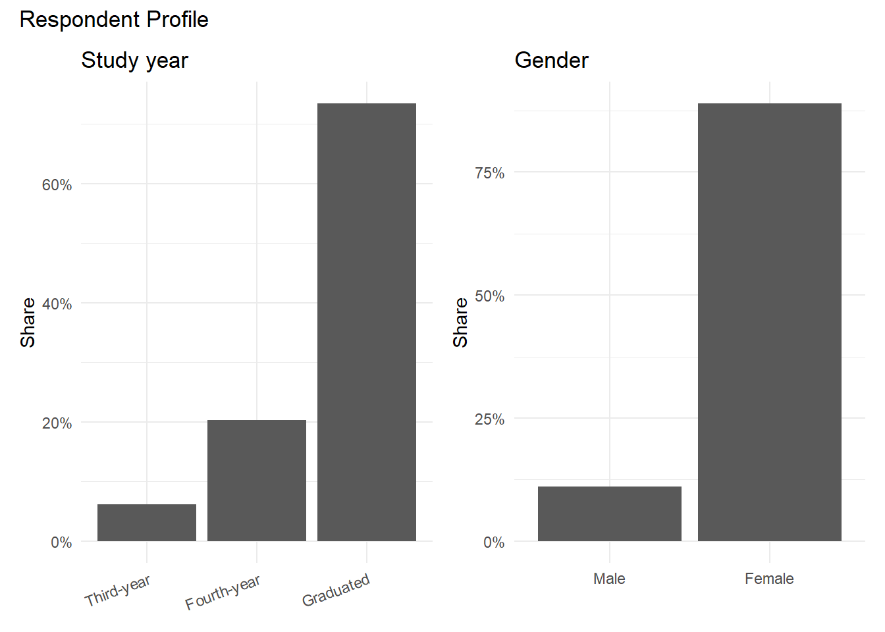
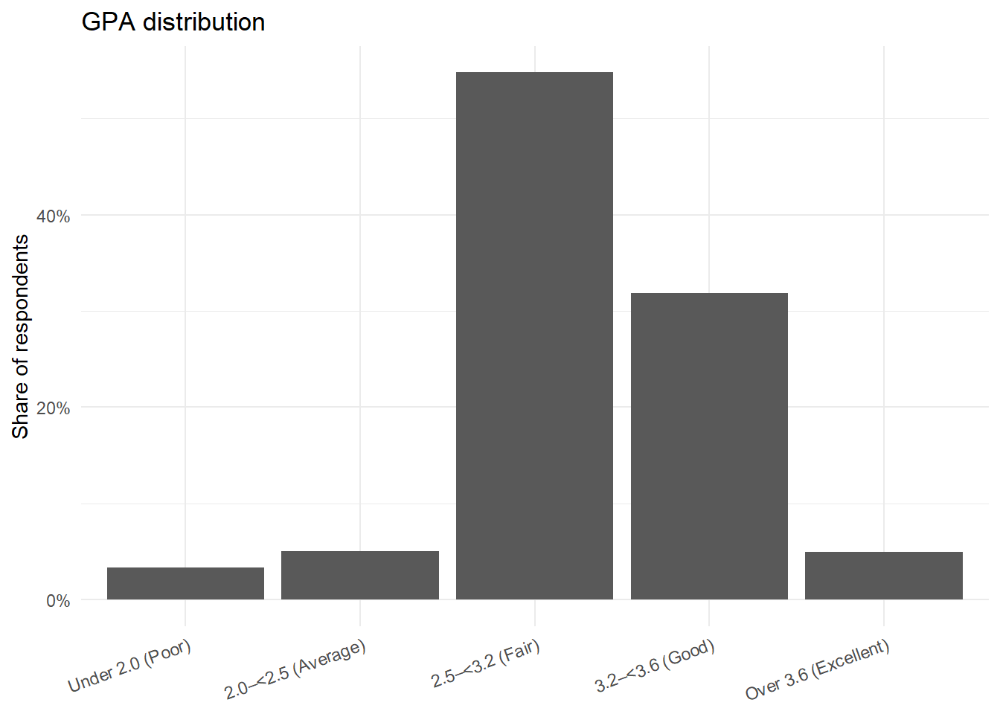
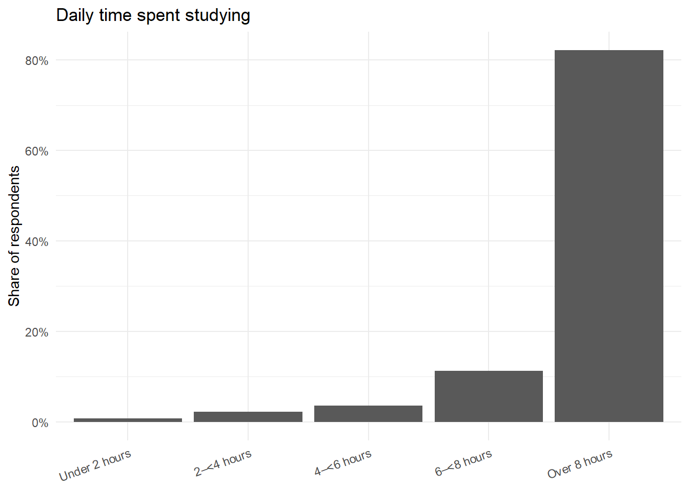
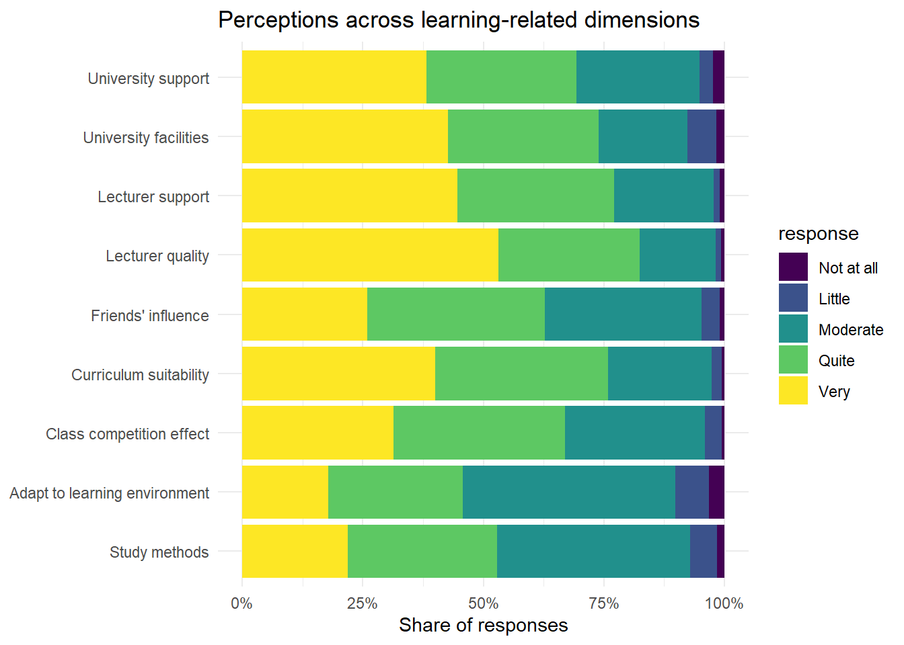
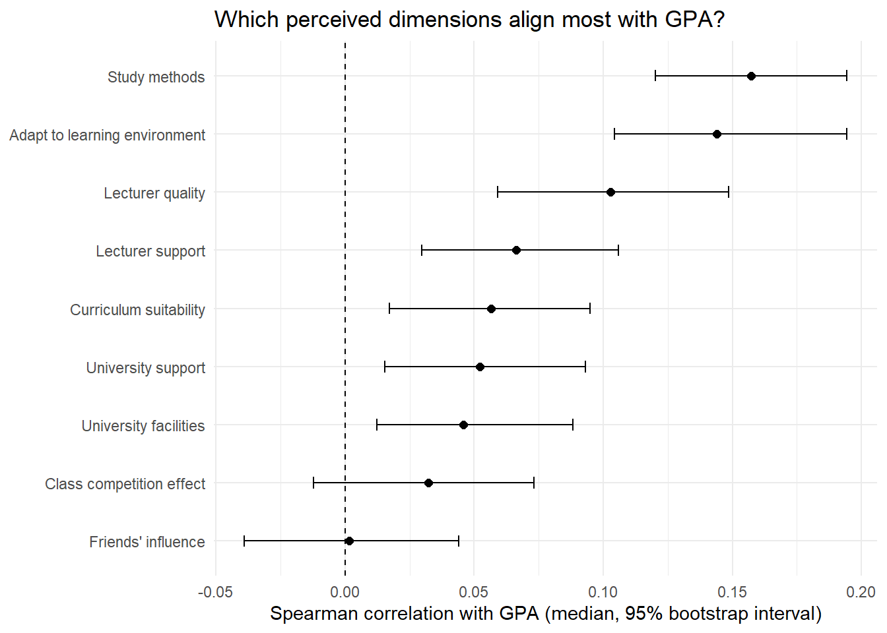
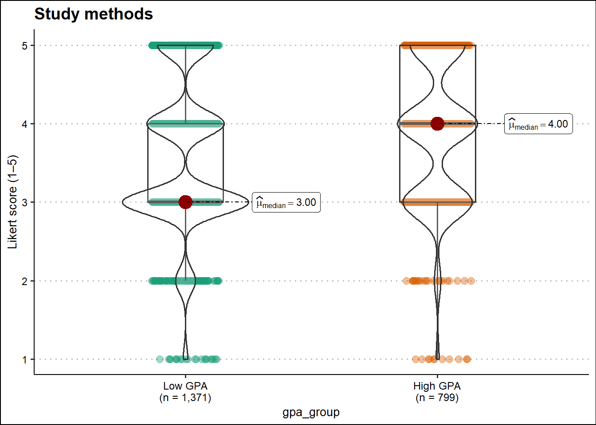
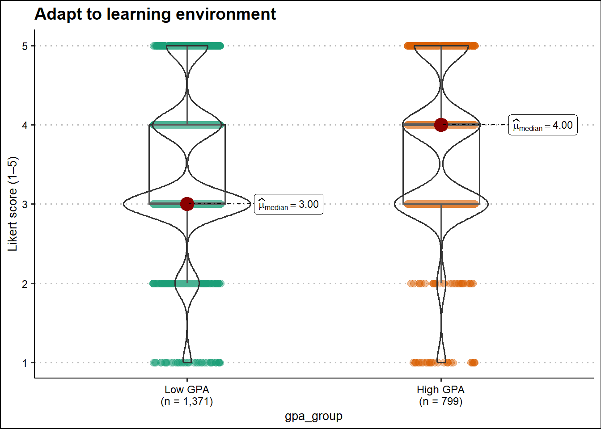
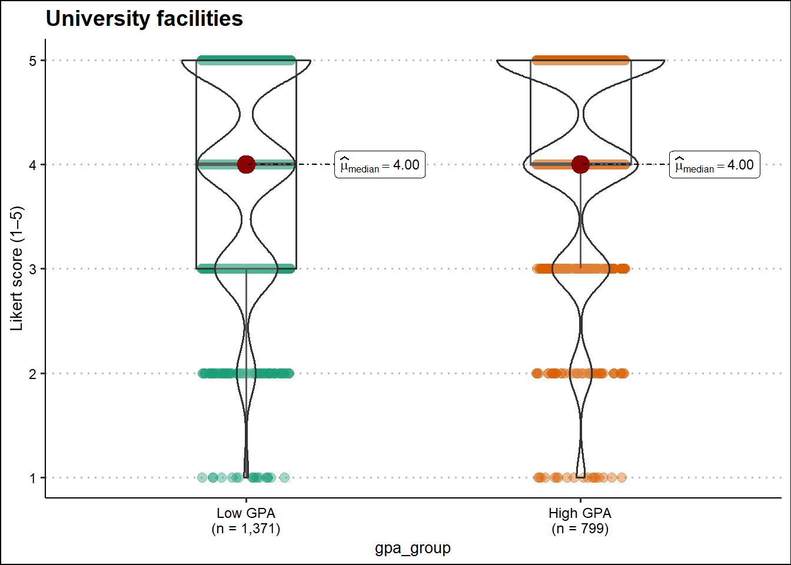
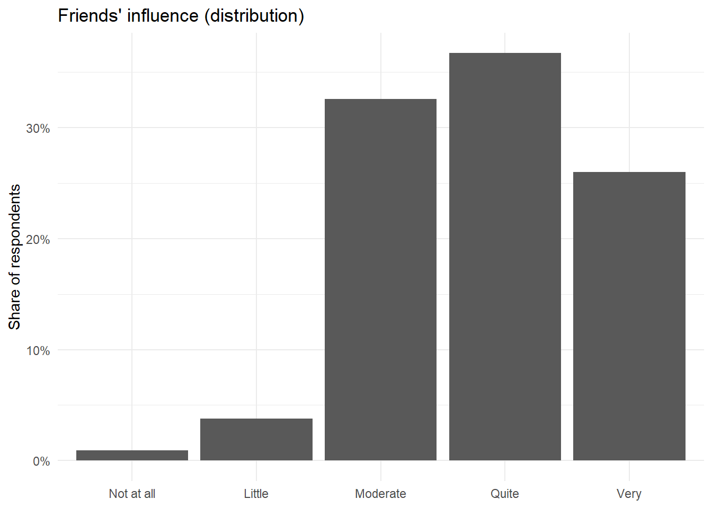
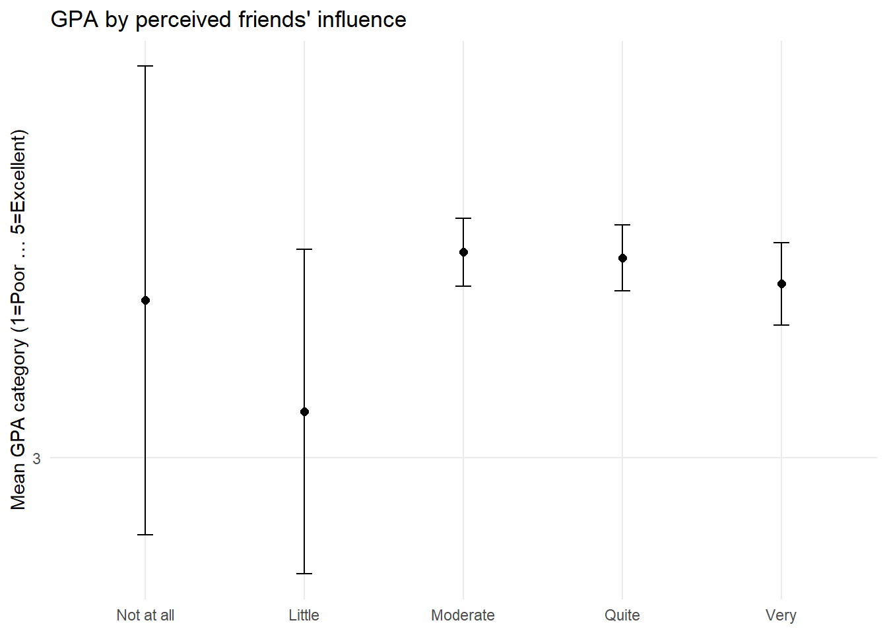

pacman::p_load(
tidyverse,
readxl,
janitor,
scales,
waffle
)Take_Home_Exercise_1
1.Overview
This take-home exercise transforms raw survey responses into decision-relevant insights using visually-driven survey analysis. The dataset contains demographic/background variables (e.g., study year, gender, parental education) and multiple Likert-scale items describing perceived learning conditions and support.
Following the requirements, the analysis workflow is fully reproducible using tidyverse for data processing and ggplot2 (and extensions) for visualisation. The final deliverable presents 5–10 key observations supported by clear graphics, with each visualisation accompanied by a short interpretation (≤150 words).
2.Data Preparation
2.1 Load Packages
2.2 Import Data
raw <- read_excel("data/Database paper.xlsx") %>%
clean_names()
glimpse(raw)Rows: 2,170
Columns: 22
$ year <dbl> 5, 5, 5, 5, 5, 5, 5, 5, 5, 5, 5, 5, 5, 5, 5, 5, 5,…
$ gender <dbl> 2, 1, 2, 2, 1, 2, 2, 2, 2, 2, 1, 2, 2, 2, 2, 2, 2,…
$ policy_stu <dbl> 2, 2, 2, 2, 1, 2, 2, 2, 2, 2, 2, 2, 2, 1, 2, 2, 2,…
$ minority_stu <dbl> 2, 2, 2, 2, 2, 2, 2, 2, 2, 2, 2, 2, 2, 2, 2, 2, 2,…
$ poor_stu <dbl> 2, 2, 2, 2, 2, 2, 2, 2, 2, 2, 2, 2, 2, 2, 2, 2, 2,…
$ father_edu <dbl> 4, 3, 4, 5, 2, 5, 6, 5, 5, 5, 3, 3, 3, 3, 3, 4, 5,…
$ mother_edu <dbl> 4, 3, 4, 4, 3, 5, 5, 4, 5, 4, 3, 3, 3, 4, 3, 4, 5,…
$ father_occupation <dbl> 2, 2, 1, 1, 3, 1, 1, 5, 1, 3, 3, 3, 3, 3, 2, 2, 4,…
$ mother_occupation <dbl> 3, 4, 2, 1, 3, 2, 4, 3, 1, 3, 3, 3, 3, 3, 2, 2, 4,…
$ time_friends <dbl> 2, 1, 1, 2, 1, 1, 2, 2, 1, 3, 2, 2, 2, 2, 2, 1, 3,…
$ time_socical_media <dbl> 2, 3, 2, 2, 2, 3, 2, 2, 2, 2, 2, 1, 2, 2, 2, 3, 4,…
$ time_studying <dbl> 5, 5, 5, 5, 1, 2, 5, 5, 5, 5, 5, 5, 5, 1, 5, 5, 5,…
$ gpa <dbl> 4, 3, 4, 4, 4, 4, 3, 5, 5, 3, 3, 4, 4, 3, 5, 4, 4,…
$ adapt_learning_uni <dbl> 4, 3, 4, 4, 5, 4, 4, 4, 4, 3, 4, 4, 4, 5, 4, 4, 5,…
$ study_methods <dbl> 4, 3, 4, 4, 5, 4, 4, 4, 4, 4, 4, 4, 4, 5, 4, 3, 5,…
$ support_of_uni <dbl> 3, 3, 4, 5, 5, 5, 5, 5, 4, 5, 4, 4, 4, 5, 4, 4, 5,…
$ support_of_lec <dbl> 4, 4, 4, 5, 5, 4, 5, 4, 4, 5, 4, 4, 4, 5, 4, 4, 5,…
$ facilitie_uni <dbl> 4, 4, 3, 5, 5, 5, 5, 4, 4, 5, 4, 4, 4, 5, 4, 3, 5,…
$ quality_lecturer <dbl> 4, 3, 4, 5, 5, 5, 4, 5, 5, 5, 4, 4, 4, 5, 4, 4, 5,…
$ training_curriculum <dbl> 4, 3, 4, 4, 5, 4, 5, 4, 4, 5, 4, 4, 4, 5, 4, 3, 5,…
$ competitive_class <dbl> 3, 3, 4, 4, 4, 3, 4, 3, 4, 4, 4, 4, 4, 5, 4, 4, 5,…
$ infuence_f_friends <dbl> 3, 4, 4, 4, 5, 3, 5, 4, 4, 4, 4, 4, 4, 5, 4, 5, 4,…2.3 Basic Data Checks (Structure, Missingness, Duplicate Rows)
# Dimensions
dim(raw)[1] 2170 22# Quick missingness profile
raw %>%
summarise(across(everything(), ~sum(is.na(.)))) %>%
pivot_longer(everything(), names_to = "variable", values_to = "n_missing") %>%
arrange(desc(n_missing)) %>%
print(n = 50)# A tibble: 22 × 2
variable n_missing
<chr> <int>
1 year 0
2 gender 0
3 policy_stu 0
4 minority_stu 0
5 poor_stu 0
6 father_edu 0
7 mother_edu 0
8 father_occupation 0
9 mother_occupation 0
10 time_friends 0
11 time_socical_media 0
12 time_studying 0
13 gpa 0
14 adapt_learning_uni 0
15 study_methods 0
16 support_of_uni 0
17 support_of_lec 0
18 facilitie_uni 0
19 quality_lecturer 0
20 training_curriculum 0
21 competitive_class 0
22 infuence_f_friends 0# Check duplicated rows (if any)
raw %>% duplicated() %>% sum()[1] 2262.4 Recode Variables Using The Codebook
In the raw dataset, categorical responses are stored as numeric codes. To ensure interpretability and correct ordering in plots, variables are recoded into factors (ordered where appropriate). This step aligns the data structure with survey analysis best practices and ensures that ggplot2 displays categories in meaningful order.
likert_5 <- c("Not at all", "Little", "Moderate", "Quite", "Very")
survey <- raw |>
mutate(
# A.1 Year
year = factor(
year,
levels = 1:5,
labels = c("First-year", "Second-year", "Third-year", "Fourth-year", "Graduated"),
ordered = TRUE
),
# A.2 Gender
gender = factor(gender, levels = c(1, 2), labels = c("Male", "Female")),
# A.3–A.5 Yes/No
policy_stu = factor(policy_stu, levels = c(1, 2), labels = c("Yes", "No")),
minority_stu = factor(minority_stu, levels = c(1, 2), labels = c("Yes", "No")),
poor_stu = factor(poor_stu, levels = c(1, 2), labels = c("Yes", "No")),
# A.6–A.7 Parental education
father_edu = factor(
father_edu,
levels = 1:6,
labels = c("Primary", "Secondary", "High school", "College",
"University/Graduate", "Other"),
ordered = TRUE
),
mother_edu = factor(
mother_edu,
levels = 1:6,
labels = c("Primary", "Secondary", "High school", "College",
"University/Graduate", "Other"),
ordered = TRUE
),
# A.8–A.9 Parental occupation
father_occupation = factor(
father_occupation,
levels = 1:5,
labels = c("Government employee", "Self-employment", "Freelance", "Other", "Not public")
),
mother_occupation = factor(
mother_occupation,
levels = 1:5,
labels = c("Government employee", "Self-employment", "Freelance", "Other", "Not public")
),
# A.10–A.12 Time use (ordered)
time_friends = factor(
time_friends,
levels = 1:5,
labels = c("Under 1 hour", "1–<2 hours", "2–<3 hours", "3–<4 hours", "Over 4 hours"),
ordered = TRUE
),
time_socical_media = factor(
time_socical_media,
levels = 1:5,
labels = c("Under 1 hour", "1–<2 hours", "2–<3 hours", "3–<4 hours", "Over 4 hours"),
ordered = TRUE
),
time_studying = factor(
time_studying,
levels = 1:5,
labels = c("Under 2 hours", "2–<4 hours", "4–<6 hours", "6–<8 hours", "Over 8 hours"),
ordered = TRUE
),
# A.13 GPA (ordered) + numeric version for correlation/mean plots (Obs 5 & 7)
gpa = factor(
gpa,
levels = 1:5,
labels = c(
"Under 2.0 (Poor)",
"2.0–<2.5 (Average)",
"2.5–<3.2 (Fair)",
"3.2–<3.6 (Good)",
"Over 3.6 (Excellent)"
),
ordered = TRUE
),
gpa_num = as.integer(gpa), # 1..5 (good for Spearman / trend)
# B items (Likert; ordered)
adapt_learning_uni = factor(adapt_learning_uni, levels = 1:5, labels = likert_5, ordered = TRUE),
study_methods = factor(study_methods, levels = 1:5, labels = likert_5, ordered = TRUE),
support_of_uni = factor(support_of_uni, levels = 1:5, labels = likert_5, ordered = TRUE),
support_of_lec = factor(support_of_lec, levels = 1:5, labels = likert_5, ordered = TRUE),
facilitie_uni = factor(facilitie_uni, levels = 1:5, labels = likert_5, ordered = TRUE),
quality_lecturer = factor(quality_lecturer, levels = 1:5, labels = likert_5, ordered = TRUE),
training_curriculum = factor(training_curriculum, levels = 1:5, labels = likert_5, ordered = TRUE),
competitive_class = factor(competitive_class, levels = 1:5, labels = likert_5, ordered = TRUE),
infuence_f_friends = factor(infuence_f_friends, levels = 1:5, labels = likert_5, ordered = TRUE)
)likert_long <- survey |>
dplyr::select(
year, gender, gpa, gpa_num,
adapt_learning_uni, study_methods,
support_of_uni, support_of_lec,
facilitie_uni, quality_lecturer,
training_curriculum, competitive_class,
infuence_f_friends
) |>
tidyr::pivot_longer(
cols = c(
adapt_learning_uni, study_methods,
support_of_uni, support_of_lec,
facilitie_uni, quality_lecturer,
training_curriculum, competitive_class,
infuence_f_friends
),
names_to = "item",
values_to = "response"
) |>
dplyr::mutate(
response_num = as.integer(response),
item = dplyr::recode(item,
adapt_learning_uni = "Adapt to learning environment",
study_methods = "Study methods",
support_of_uni = "University support",
support_of_lec = "Lecturer support",
facilitie_uni = "University facilities",
quality_lecturer = "Lecturer quality",
training_curriculum = "Curriculum suitability",
competitive_class = "Class competition effect",
infuence_f_friends = "Friends' influence"
)
)3.Observations
Observation1 - Sample profiles shows strong imbalance (Year and Gender)
The respondent pool is not evenly distributed across key demographics. Graduated students constitute a noticeably large share of the sample, while earlier cohorts represent a smaller proportion. In addition, female respondents dominate the dataset. This matters because subsequent “overall” patterns (e.g., average perceptions or GPA distribution) will largely reflect the experience of the majority groups rather than the entire student population. Therefore, the findings should be interpreted as describing this specific respondent composition, and comparisons across groups (where sample sizes differ substantially) should be treated cautiously. Establishing this sample profile upfront helps contextualize later observations and reduces the risk of over-generalizing from an imbalanced survey sample.

year_tbl <- survey |> count(year) |> mutate(pct = n/sum(n))
gender_tbl <- survey |> count(gender) |> mutate(pct = n/sum(n))
library(patchwork)
library(ggthemes)
p1 <- year_tbl |>
ggplot(aes(x = year, y = pct)) +
geom_col() +
scale_y_continuous(labels = scales::percent_format()) +
labs(title = "Study year", x = NULL, y = "Share") +
theme_minimal() +
theme(axis.text.x = element_text(angle = 20, hjust = 1))
p2 <- gender_tbl |>
ggplot(aes(x = gender, y = pct)) +
geom_col() +
scale_y_continuous(labels = scales::percent_format()) +
labs(title = "Gender", x = NULL, y = "Share") +
theme_minimal()
p1 + p2 + plot_annotation(title = "Respondent Profile")Observation 2 — GPA distribution is middle-heavy (Fair/Good dominate)
GPA responses cluster strongly in the middle categories, with “Fair” and “Good” making up most of the sample. Both tails—“Poor” and “Excellent”—are relatively small. This middle-heavy distribution suggests that most respondents report moderate academic performance rather than extreme outcomes. As a result, later comparisons (e.g., GPA by study behaviors) are more likely to reveal incremental shifts rather than sharp separations. It also implies that visual patterns such as monotonic trends (e.g., increasing/decreasing average GPA across ordered groups) may be more informative than searching for rare high/low outliers. Overall, this distribution provides a stable baseline for interpreting associations between perceived learning conditions and academic performance.

survey |>
count(gpa) |>
mutate(pct = n / sum(n)) |>
ggplot(aes(x = gpa, y = pct)) +
geom_col() +
scale_y_continuous(labels = scales::percent_format()) +
labs(x = NULL, y = "Share of respondents", title = "GPA distribution") +
theme_minimal() +
theme(axis.text.x = element_text(angle = 20, hjust = 1))Observation 3 — Self-reported study time is highly concentrated at “Over 8 hours”
Self-reported study time is heavily concentrated in the highest category (“Over 8 hours”), while lower time brackets account for a comparatively small share of respondents. This creates a potential ceiling effect: when most observations sit at the upper end, the data provides limited contrast for detecting differences in outcomes across study-time groups. Practically, this means study time may appear weakly related to GPA not because it is irrelevant, but because the survey responses are compressed into one dominant category. This pattern may reflect real behavior among respondents, differences in how individuals interpret the time brackets, or response bias (e.g., socially desirable reporting). Recognizing this distributional issue is important before using study time as an explanatory factor in later comparisons.

survey |>
count(time_studying) |>
mutate(pct = n / sum(n)) |>
ggplot(aes(x = time_studying, y = pct)) +
geom_col() +
scale_y_continuous(labels = scales::percent_format()) +
labs(x = NULL, y = "Share of respondents", title = "Daily time spent studying") +
theme_minimal() +
theme(axis.text.x = element_text(angle = 20, hjust = 1))Observation 4 — Likert items skew positive; “Adaptation” is comparatively lower
Across the nine Likert-scale dimensions, responses generally lean toward the positive end (“Quite” and “Very”), indicating broadly favorable perceptions of learning conditions and support. However, the pattern is not uniform across items. Relative to other dimensions, “Adapt to learning environment” attracts fewer top-end responses and a higher share of mid-range ratings, suggesting that students may feel less confident about their personal adjustment even when they view institutional or lecturer-related factors positively. In contrast, items such as lecturer quality and lecturer support tend to receive stronger top-end agreement, indicating higher perceived strength in teaching-related aspects. This cross-item comparison helps prioritize which areas appear consistently strong versus which may be perceived as comparatively weaker.

likert_dist <- likert_long |>
count(item, response) |>
group_by(item) |>
mutate(pct = n / sum(n)) |>
ungroup()
likert_dist |>
ggplot(aes(x = pct, y = fct_reorder(item, pct, .fun = sum), fill = response)) +
geom_col() +
scale_x_continuous(labels = scales::percent_format()) +
labs(x = "Share of responses", y = NULL, title = "Perceptions across learning-related dimensions") +
theme_minimal()Observation 5 — Strongest GPA association appears in “Study methods” and “Adaptation”
Comparing the Likert dimensions by their Spearman correlation with GPA highlights which perceptions align most strongly with academic performance. “Study methods” shows the highest positive association with GPA, suggesting that students who rate their study strategies more favorably also tend to report higher GPA categories. “Adapt to learning environment” is also among the stronger correlates, indicating that better self-reported adjustment is linked to better academic outcomes. Other dimensions, such as facilities or perceived class competition, show weaker associations, implying that they vary less systematically with GPA in this sample. Importantly, these correlations are descriptive and do not establish causality; they indicate which perceived factors co-move with GPA and therefore may be most informative for targeted interpretation and discussion.

boot_corr |>
ggplot(aes(x = r_med, y = forcats::fct_reorder(item, r_med))) +
geom_vline(xintercept = 0, linetype = "dashed") +
geom_errorbarh(aes(xmin = r_lo, xmax = r_hi), height = 0.2) +
geom_point(size = 2) +
labs(
x = "Spearman correlation with GPA (median, 95% bootstrap interval)",
y = NULL,
title = "Which perceived dimensions align most with GPA?"
) +
theme_minimal()Inferential Statistics: ggbetweenstats()

df_gpa2 %>%
filter(item == "Study methods") %>%
ggstatsplot::ggbetweenstats(
x = gpa_group,
y = response_num,
type = "np",
pairwise.comparisons = FALSE,
results.subtitle = FALSE,
messages = FALSE,
xlab = NULL,
ylab = "Likert score (1–5)",
title = "Study methods"
) +
scale_y_continuous(breaks = 1:5, limits = c(1, 5)) +
ggthemes::theme_clean(base_size = 12) +
theme(legend.position = "none")
df_gpa2 %>%
filter(item == "Adapt to learning environment") %>%
ggstatsplot::ggbetweenstats(
x = gpa_group,
y = response_num,
type = "np",
pairwise.comparisons = FALSE,
results.subtitle = FALSE,
messages = FALSE,
xlab = NULL,
ylab = "Likert score (1–5)",
title = "Adapt to learning environment"
) +
scale_y_continuous(breaks = 1:5, limits = c(1, 5)) +
ggthemes::theme_clean(base_size = 12) +
theme(legend.position = "none")
df_gpa2 %>%
filter(item == "University facilities") %>%
ggstatsplot::ggbetweenstats(
x = gpa_group,
y = response_num,
type = "np",
pairwise.comparisons = FALSE,
results.subtitle = FALSE,
messages = FALSE,
xlab = NULL,
ylab = "Likert score (1–5)",
title = "University facilities"
) +
scale_y_continuous(breaks = 1:5, limits = c(1, 5)) +
ggthemes::theme_clean(base_size = 12) +
theme(legend.position = "none")Observation 6 — Friends’ influence is rated non-trivially, yet shows little GPA differentiation
Responses indicate that peers are perceived to have a meaningful influence, with many respondents selecting mid-to-high agreement levels rather than “Not at all.” Despite this perception, GPA patterns across friends’ influence categories show little separation: the mean GPA category remains fairly stable, and confidence intervals overlap substantially across groups. This suggests a disconnect between perceived peer influence and reported academic outcomes in this dataset. One possible interpretation is that friends affect aspects of student life not directly captured by GPA, or that positive and negative peer effects offset each other in aggregate. Alternatively, the influence may be real but not detectable given measurement limitations (ordinal categories and self-report). Either way, this contrast is a useful reminder that perceived importance does not necessarily translate into observable outcome differences.


# (A) Distribution
p_friends_dist <- survey |>
count(infuence_f_friends) |>
mutate(pct = n / sum(n)) |>
ggplot(aes(x = infuence_f_friends, y = pct)) +
geom_col() +
scale_y_continuous(labels = scales::percent_format()) +
labs(x = NULL, y = "Share of respondents", title = "Friends' influence (distribution)") +
theme_minimal()
# (B) GPA by friends influence (mean GPA category)
p_friends_gpa <- survey |>
filter(!is.na(infuence_f_friends), !is.na(gpa_num)) |>
group_by(infuence_f_friends) |>
summarise(
mean_gpa = mean(gpa_num),
se = sd(gpa_num) / sqrt(n()),
.groups = "drop"
) |>
ggplot(aes(x = infuence_f_friends, y = mean_gpa)) +
geom_point(size = 2) +
geom_errorbar(aes(ymin = mean_gpa - 1.96 * se, ymax = mean_gpa + 1.96 * se), width = 0.1) +
scale_y_continuous(breaks = 1:5) +
labs(x = NULL, y = "Mean GPA category (1=Poor … 5=Excellent)",
title = "GPA by perceived friends' influence") +
theme_minimal()
p_friends_dist
p_friends_gpa